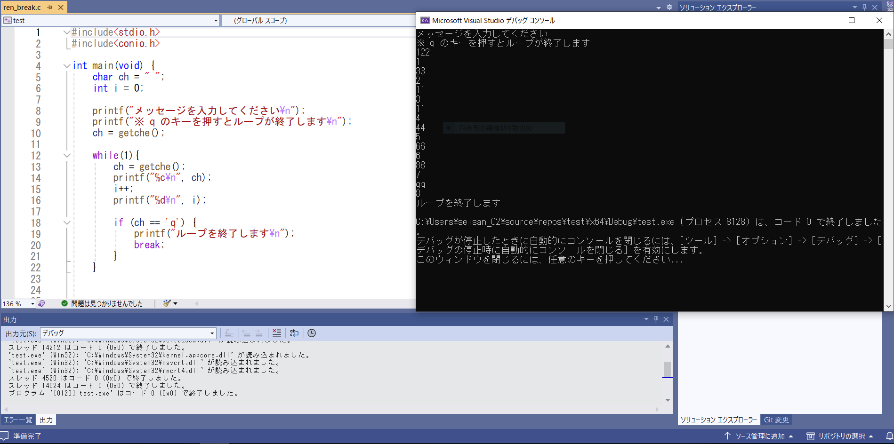
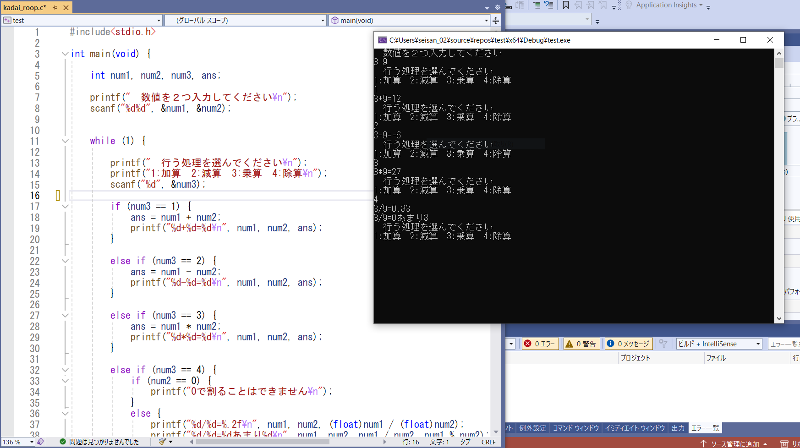
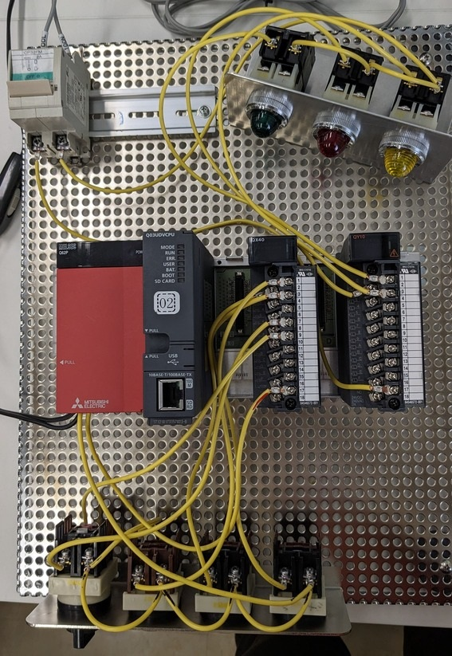
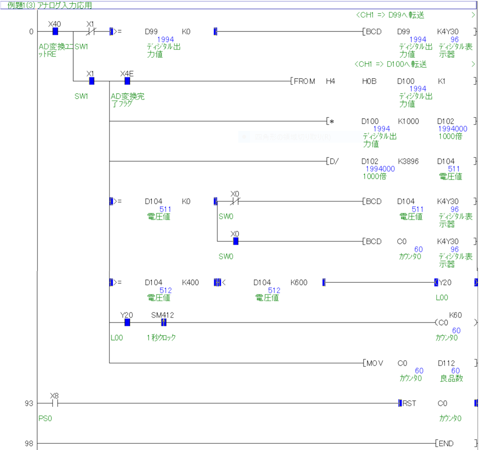
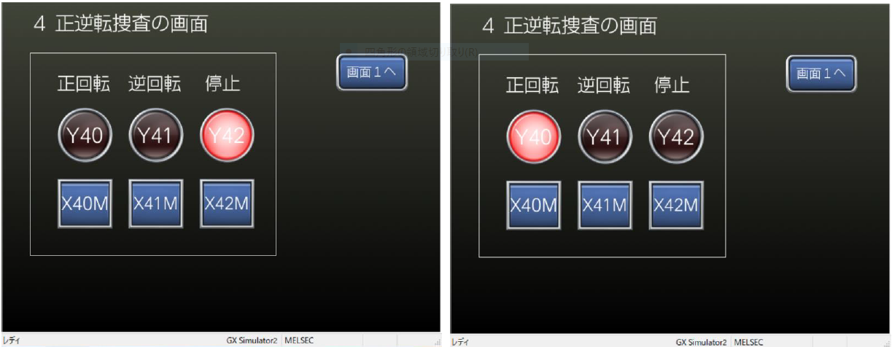

C言語の基礎、２進数、ビットや関数について学びました。
画像はif関数やroop関数を用いて、２つの数値を入力後に四則計算を選択し解を出力するプログラムです。
C言語
 PLC
  
PLC制御では実際にCPUとスイッチ、ボタン、ランプなどを配線で繋げ、プログラムを動かすことを学びました。
アナログ機器、GOTと接続してそれぞれから操作(入力)・表示(出力)したり、GOTの画面を作成しました。
また、フィールドネットワークでは空気圧制御を行ってピストン操作を手動・自動で運転するプログラムを作成しました。
また、フィールドネットワークでは空気圧制御を行ってピストン操作を手動・自動で運転するプログラムを作成しました。
HTML/CSS・javascript
HTMLの基礎から学びなおし、独学していた頃とは変更された点(フレームの削除)などを知ることができました。
当時はわからなかったjavascriptの使い方、応用の仕方を学ぶことができ、とても有意義でした。こちらに関しては [ミニクイズ]に使用しています。
このWEBページを作成する際のコンセプトは「見やすく・わかりやすく・迷わない設計」でした。
トップ画像を決め、それに合わせたカラーに統一し、落ち着いた色合い、行間などにも気を配りました。
できれば色覚のバリアフリーまで考えられたら良かったと思うので、そこは反省点です。
当時はわからなかったjavascriptの使い方、応用の仕方を学ぶことができ、とても有意義でした。こちらに関しては [ミニクイズ]に使用しています。
このWEBページを作成する際のコンセプトは「見やすく・わかりやすく・迷わない設計」でした。
トップ画像を決め、それに合わせたカラーに統一し、落ち着いた色合い、行間などにも気を配りました。
できれば色覚のバリアフリーまで考えられたら良かったと思うので、そこは反省点です。